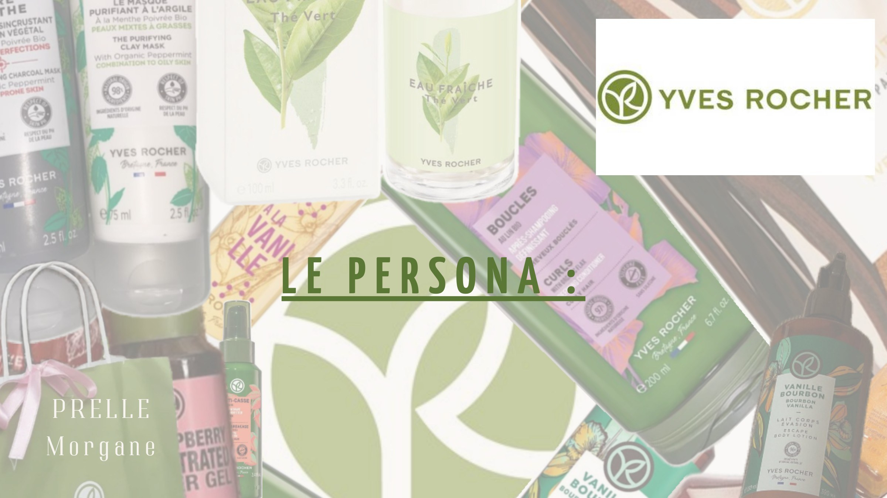

Persona Yves Rocher
Un portrait de cliente type pour mieux comprendre sa cible et adapter les contenus, le ton et les réseaux sociaux d'une marque de cosmétiques végétaux.

Qu'est-ce qu'un persona ?
Un persona est le portrait d'un client type, imaginé à partir de données réelles : qui il est, ce qu'il aime, comment il achète. Il permet au community manager de mieux comprendre sa clientèle cible, ses besoins, ses goûts et ses habitudes.
C'est ensuite un outil de décision très concret : il aide à adapter les publications, les stories, le ton employé et les réseaux sociaux choisis, afin de proposer des contenus qui intéressent les consommateurs, attirent leur attention, créent de l'engagement et fidélisent la communauté.
Contexte
Yves Rocher est une marque française de cosmétiques végétaux, présente en boutique, en ligne et sur les réseaux sociaux. J'ai construit le persona d'une cliente type, Olivia, pour imaginer à qui la marque doit parler et comment.
Objectifs
- Définir une cible précise plutôt que « tout le monde »
- Comprendre ses motivations, ses freins et ses canaux d'information
- En déduire des choix éditoriaux : ton, formats, réseaux, types d'offres
Le persona
Clique sur la fiche pour l'afficher en grand.

Olivia en bref
Olivia Rivière a 24 ans, vit seule à Saint-Denis et travaille comme graphiste. Créative et écoresponsable, elle est prudente dans ses achats : elle compare les prix, lit les avis et s'intéresse aux promotions. Elle consacre 100 à 150 € par mois à sa beauté.
Ce que j'en déduis pour la communauté
- Réseaux sociaux : c'est là qu'Olivia découvre les nouveautés, les tests produits et les conseils. Contenus courts et visuels (stories, reels) pour présenter les nouveautés et les routines.
- Ton : proche, rassurant et pédagogique, pour répondre à ses doutes sur l'efficacité et la compatibilité avec sa peau.
- Transparence : expliquer clairement les ingrédients d'origine végétale et les bénéfices des soins, car le manque de clarté la freine.
- Preuve sociale : relayer les avis clients et les retours d'expérience, qu'elle consulte avant d'acheter.
- Offres : mettre en avant promotions et fidélité, y compris par e-mail et newsletters.
- Lien avec la boutique : inviter à venir chercher un conseil personnalisé en magasin.
Ce que j'ai appris
- Comprendre les besoins et les attentes de sa communauté.
- Créer des publications qui intéressent réellement sa cible.
- Attirer les bonnes personnes sur les réseaux sociaux.
- Adapter les offres et les messages aux habitudes des consommateurs.
- Anticiper les questions et les réactions de la communauté.
- Créer une relation de proximité avec les abonnés.
- Éviter de communiquer au hasard et de publier des contenus qui ne correspondent pas à sa cible.
- Fidéliser les abonnés en proposant des contenus qui leur parlent.